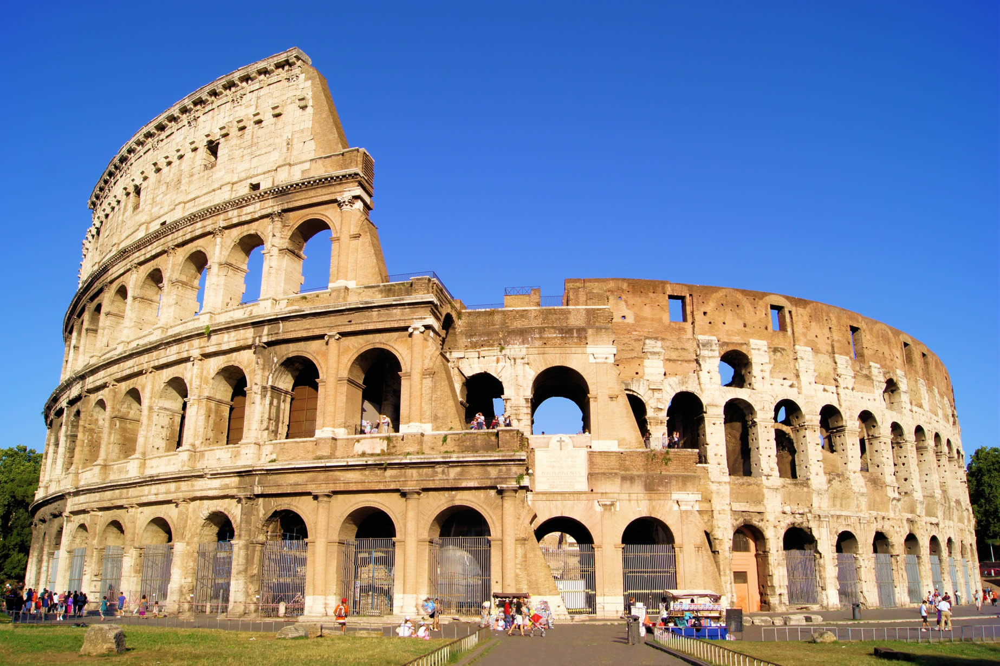

Historia
A história da Itália influenciou fortemente a cultura e o desenvolvimento social, tanto na Europa como no resto do mundo. Foi o berço da civilização etrusca, da Magna Grécia, da civilização romana, da Igreja Católica, das repúblicas marítimas, do humanismo, do Renascimento e do fascismo. Foi o lugar de nascimento de muitos artistas, cientistas, músicos, literatos, exploradores.
Roma antiga
Uma das mais importantes culturas antigas desenvolvidas em solo italiano foi a etrusca (a partir do século VIII a.C.), que influenciou profundamente Roma e sua civilização, na qual muitas tradições importantes de origem mediterrânica e eurasiática encontraram a mais original e duradoura síntese política, econômica e cultural.
Nascida na península Itálica, Roma, um assentamento em um vau no rio Tibre, com fundação convencional em 753 a.C. Foi regida por um período de 244 anos por um sistema monárquico, inicialmente com soberanos de origem das tribos latina e sabina, depois por reis etruscos. A tradição conta sete reis: Rômulo, Numa Pompílio, Túlio Hostílio, Anco Márcio, Tarquínio Prisco, Sérvio Túlio e Tarquínio, o Soberbo. Em 509 a.C., os romanos expulsam o último rei da sua cidade e estabelecem a República Romana.Desde sempre terra de origem e de encontro entre diversos povos e culturas, a civilização romana foi capaz de explorar as contribuições provenientes dos etruscos e de outros povos itálicos, da Grécia e de outras regiões do Mediterrâneo Oriental (Palestina — o berço do cristianismo — Síria, Fenícia e Egito). Graças ao seu império, Roma difundiu a cultura heleno-romana pela Europa e pelo Norte de África, que foram os limites de sua civilização.
O Império Romano estava entre as forças econômicas, culturais, políticas e militares mais poderosas do mundo de seu tempo. Foi um dos maiores impérios da história mundial. Em seu auge, sob o governo de Trajano, cobriu 5 milhões de quilômetros quadrados. O legado romano influenciou profundamente a civilização ocidental, moldando a maior parte do mundo moderno; entre os muitos legados do domínio romano estão o uso generalizado das línguas românicas derivadas do latim, do sistema numérico, do alfabeto, do calendário do Ocidente e da transformação do cristianismo em uma religião mundial importante.
Em um lento declínio desde o século III, o Império dividiu-se em dois no ano de 395. O Império Ocidental, sob a pressão das invasões bárbaras, entrou em colapso em 476, quando seu último imperador foi deposto pelo chefe germânico Odoacro, enquanto o Império Oriental ainda sobreviveria por mais mil anos.
|

|
Unificação
A Itália contemporânea nasceu como um Estado unitário quando, em 17 de março de 1861, a maioria dos estados da península e as duas principais ilhas foram unidas sob o governo do rei da Sardenha Vítor Emanuel II da Casa de Saboia. O arquiteto da unificação da Itália foi o primeiro-ministro da Sardenha, conde Camillo Benso de Cavour, que apoiou (embora não reconhecendo diretamente) Giuseppe Garibaldi, permitindo a anexação do Reino das Duas Sicílias pelo Reino da Sardenha-Piemonte.
O processo de unificação teve a ajuda da França, que — juntamente com o Reino Unido — tinha interesse em criar um estado anti-Habsburgo liderado por uma dinastia amiga (Saboia) e capaz de impedir o surgimento de um estado republicano e democrático na Itália, desejado por alguns "patriotas", como Mazzini e como já tinha acontecido em parte, em Roma, Milão, Florença e Veneza durante o movimento revolucionário de 1848.
A primeira capital do reino foi Turim, a antiga capital do Reino da Sardenha e ponto de partida do processo de unificação da Itália. Depois da convenção de setembro de 1864, a capital foi transferida para Florença.
Em 1866, a Itália anexou o Vêneto, até então na posse do Império Austríaco, na sequência da terceira guerra de independência, na qual a Itália foi aliada da Prússia de Bismarck. A unificação não incluiu a Córsega, a região de Nice, cidade natal de Garibaldi, nem Roma e os territórios vizinhos, que estavam sob o controle do Papa e protegidos por tropas de Napoleão III.
Graças à derrota da França pelos prussianos, após uma rápida ação militar em 20 de setembro de 1870, Roma também foi anexada e proclamada a capital do reino. Mais tarde, com o Tratado de Latrão, em 1929, o Papa obteve a soberania da Cidade do Vaticano. Outra entidade autônoma dentro das fronteiras italianas é a República de San Marino.
Mas mesmo após a conquista de Roma em 1870, a unificação da Itália ainda não estava completa, pois faltavam ainda as chamadas "terras irredentas": o Trentino, Trieste, a Ístria e a Dalmácia, que os nacionalistas clamavam como pertencentes à Itália. O Trentino, Trieste, a Ístria e Fiume foram anexados depois dos tratados de paz, após a Primeira Guerra Mundial, impostos pela França, Reino Unido e Estados Unidos aos Impérios Centrais, perdedores da guerra.
|
|
República
A Itália se tornou uma república, após um referendo realizado em 2 de junho de 1946, um dia comemorado desde então como o Dia da República. Esta foi também a primeira vez que as mulheres italianas tiveram direito ao voto. O filho de Vítor Emmanuel III, Humberto II, foi forçado a abdicar e foi exilado. A constituição republicana entrou em vigor em 1 de janeiro de 1948. Nos termos dos Tratados de Paz de Paris de 1947, a área da fronteira oriental foi perdida para a Iugoslávia e, mais tarde, o Território Livre de Trieste foi dividido entre os dois Estados. O medo no eleitorado italiano de uma possível tomada comunista provou ser crucial para o resultado da primeira eleição com sufrágio universal em 18 de abril de 1948, quando os democratas-cristãos, sob a liderança de Alcide De Gasperi, obtiveram uma vitória esmagadora. Consequentemente, em 1949, a Itália tornou-se membro da OTAN. O Plano Marshall ajudou a reavivar a economia italiana, que, até final dos anos 1960, desfrutou de um período de crescimento econômico sustentado, o que foi comumente chamado de "Milagre Econômico". Em 1957, a Itália foi um membro fundador da Comunidade Econômica Europeia (CEE), que posteriormente se tornou a União Europeia (UE) em 1993.
Do final dos anos 1960 até o início dos anos 1980, o país experimentou os "anos de chumbo", um período caracterizado pela crise econômica (especialmente após a crise do petróleo de 1973), generalizados conflitos sociais e massacres terroristas realizados por grupos extremistas opostos, com o suposto envolvimento dos serviços de inteligência dos Estados Unidos.
Os anos de chumbo culminaram com o assassinato do líder democrata-cristão Aldo Moro em 1978, um evento que afetou profundamente todo o país. Na década de 1980, pela primeira vez desde 1945, dois governos foram conduzidos por primeiros-ministros que não eram democratas-cristãos: um liberal (Giovanni Spadolini) e um socialista (Bettino Craxi), o Partido Democrata Cristão permaneceu, no entanto, como o principal partido do governo. Durante o governo Craxi, a economia recuperou e a Itália se tornou a quinta maior nação industrial do mundo, ganhando ingresso no G7. No entanto, como resultado de suas políticas de gastos, a dívida nacional italiana disparou durante a era Craxi, passando de 100% do produto interno bruto (PIB) pouco depois.
No início de 1990, a Itália enfrentou desafios significativos, devido aos eleitores — desencantados com a paralisia política, a dívida pública enorme e extensa corrupção do sistema (conhecida como Tangentopoli) descoberto pela "Operação Mãos Limpas" — exigirem reformas radicais. Os escândalos envolveram todos os principais partidos, mas especialmente os da coalizão de governo: o partido democrata-cristão, que governou durante quase 50 anos, sofreu uma grave crise e acabou por ser dissolvido em 1994, dividindo-se em várias facções. Os comunistas reorganizaram-se como uma força social-democrata. Durante os anos 1990 e 2000, o centro-direita (dominada pelo magnata da mídia Silvio Berlusconi) e coalizões de centro-esquerda governaram alternadamente o país, que entrou em um período prolongado de estagnação econômica.
|
|